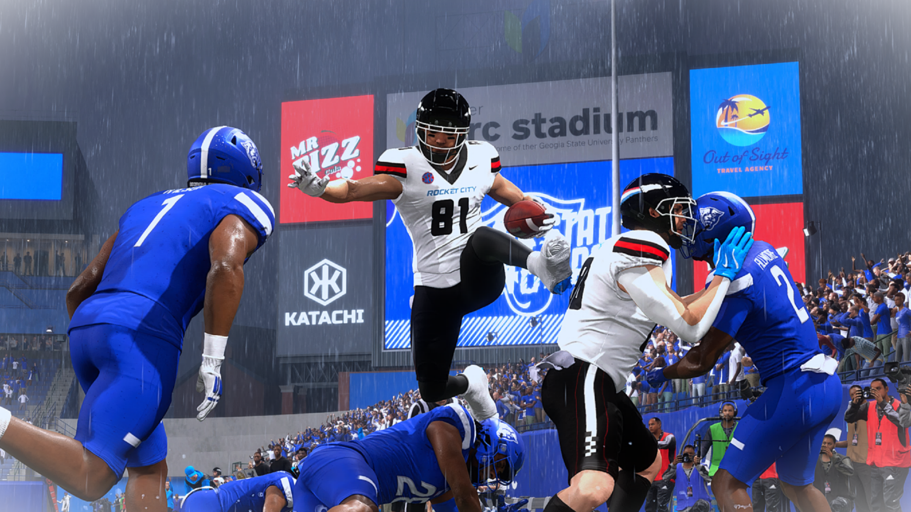

Cody Stewart
#81 | Tight End (TE) | True Freshman
Jones, Oklahoma | 6'1", 235 lbs
Player Information
| Detail | Info |
|---|---|
| Full Name | Cody Stewart |
| Position | Tight End (TE) |
| Class | True Freshman |
| Height / Weight | 6'1" / 235 lbs |
| Hometown | Jones, Oklahoma |
| Status | Returns as a Sophmore |
Awards and Honors
| Award |
|---|
| SEC First Team All-Conference |
| National Freshman All-American |
| SEC Freshman Team |
Season 1 Receiving Stats
| Stat | Value |
|---|---|
| Games Played | 13 |
| Receptions | 47 |
| Receiving Yards | 828 |
| Yards Per Reception | 17.6 |
| Receiving Touchdowns | 8 (led team) |
| Longest Reception | 82 yds |
| Yards After Catch (RAC) | 336 |
| RAC Average | 7.1 |
| Drops | 8 (17% drop rate) |
Top 3 Performances
| Game | Rec | Yds | TD | Highlight |
|---|---|---|---|---|
| Week 0 vs Sandy Creek (W 45-0) | 8 | 148 | 4 | Set the single-game receiving yards record (148) and tied the single-game receiving TD record (4) in the season opener. SEC Offensive POTW. Announced himself immediately as a true freshman. |
| Week 13 @ Georgia State (W 65-3) | 7 | 101 | 0 | First 100-yard receiving game since Week 0. Hurdled a defender on the 1-yard line. |
| Week 10 vs Florida State (W 41-38) | 3 | 99 | 1 | TD came on the second play of the game an 82-yard reception. That's Stewart's longest play of the season and the kind of early strike that sets the tone. |
Highlight

Player Storyline | The Unlikely Vertical Threat
Every time the four-star undersized tight-end Cody Stewart stepped onto the field, every defensive coordinator in the conference was pulling up film on #81, all asking the same question, “how do you cover a tight end who runs like a wide receiver?”
Stewart was constantly doubled throughout the season, and when teams committed that kind of attention to him, the rest of the team started succeeding, which caused the defense to relax their coverage. The moment they did that, Stewart made them pay.
Stewart led the team in receiving touchdowns with 8, and earned first-team All-SEC and National Freshman Team honors. Stewart is only a sophomore entering Year 2. The speed advantage he has over linebackers and safeties isn't going away any time soon.